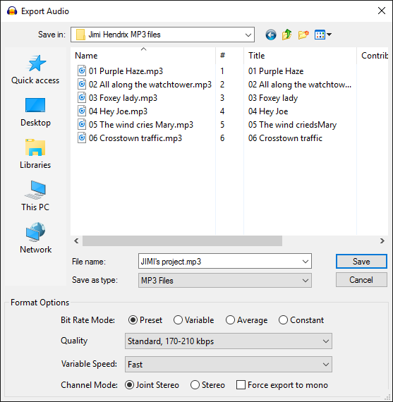

MP3 Export Options
As with all lossy, compressed formats, there is a trade-off between the size of the file and the quality of the encoded file, higher quality requiring larger files.
Note that MP3 files have a short silence at the beginning. This is not a bug in Audacity but is a limitation of the MP3 format that makes applications writing or playing MP3's add a delay. If you need to synchronize files or are making Audio Loops, use a format that does not have this limitation, such as WAV, FLAC or Ogg Vorbis.
Before you can export to MP3 you need to install the optional LAME MP3 encoder.
|
- Accessed by: then choosing MP3 Files from the Save as type dropdown menu.
- 
- Also accessed by: then choosing MP3 Files from the Save as type dropdown menu. In this case the options dialog will appear in the center of the Export Multiple dialog.
| Re-encoding to MP3 If you import an MP3 into Audacity, edit it then export it as an MP3, you will lose quality twice, once in the original MP3 encoding of the imported audio, then again when you export it from Audacity as MP3. So never do production work in MP3, instead work with a lossless format such as WAV, AIFF or FLAC and for final use then export to MP3. See this page in the Audacity Wiki for other applications that can be used to directly edit MP3 audio files, thereby avoiding lossy re-encoding. |
MP3 Export Setup
Bit Rate Mode
These offer four different ways to control the trade-off between the size and quality of the exported files.
- Preset: These are the settings recommended by the LAME developers for encoding music. Detailed descriptions of these settings are given in this article on hydrogenaudio.io.
- Insane: The best possible encoding quality. This preset has a constant bit-rate of 320 kbps, which is equivalent to 2.4 MB per minute. This setting is generally considered to be overkill as there is little if any difference in sound quality from the "Extreme" preset, but with much greater file size.
- Extreme: Extremely high quality. This setting will normally produce transparent results, but with considerably smaller file size than the "Insane" preset.
- Standard: Very good quality encoding.
- Medium: Good sound quality suitable for casual listening or portable devices.
- Variable: This mode continuously varies the bit rate used according to the complexity of the sound, in an attempt to maintain the quality of the recording at a consistent level. The settings range from 0 (highest quality) to 9 (smallest file size). Each setting defines a range of bit rates within which it will generally operate, assuming a stereo track. For a mono track, the achieved bit rate for each setting will usually be below the range indicated above.
Level 0 is comparable to the Extreme preset mentioned above, level 2 is comparable to Standard and level 4 to Medium presets. Variable bit rate offers the best quality compared to the Average and Constant bit rate options in most circumstances (extremely quiet music is one exception). It will tend to give you somewhat smaller file sizes for a given degree of quality, but the actual file sizes cannot be accurately predicted in advance.
- Average: This sets a known, average bit rate for the file, but within this average permits some fluctuations in bit rate to reflect the relative difficulty of encoding the file. This does not provide as consistently high a quality as variable bit rate, but is generally preferable to constant bit rate if you need to know more or less how large your files will be; it offers bit rates from 8 kbps to 320 kbps.
- Constant: This sets a constant bit rate for the encoding, regardless of its complexity. Of the four bit rate modes, this usually gives the worst, least consistent quality for a given file size, but that size itself is completely predictable (note that if you choose a high bit rate, the LAME encoder may use a lower constant bit rate if you choose 11025 Hz or lower project rate). Use constant bit rate if you are streaming the file over the internet, as it ensures the audio cannot stutter due to sudden peaks in the bit rate. The available bit rates are the same as for average bit rate - the default rate (128 kbps) gives you a known file size of about 1 MB per minute of mono or stereo audio.
Quality
This list lets you select the bit rate in kbps (kilobits per second) for encoding your file. A higher bit rate always gives better quality but at the expense of a larger file size and vice versa. The bit rates are absolute for average and constant bit rate modes, but expressed as a range for the variable and preset modes (except for the Insane preset).
Variable Speed
Choice of speed is available when using variable bit rate encoding. It determines the speed and bit allocation routines of the encoding algorithm. The default "Fast" option is equivalent to --vbr-new and is generally recommended for both speed and quality. The "Standard" slower option is equivalent to --vbr-old. It is possible that this may give more consistent encoding quality in some material or if you need to use an earlier 3.9x version of LAME.
Channel Mode
These controls determine how the two channels of a stereo MP3 are encoded or if the exported MP3 should always be mono.
- Joint Stereo: Enabled by default, this button lets the encoder switch from frame to frame between "Stereo" (which just encodes the left and right channels independently) and Mid/Side stereo. Mid/Side stereo converts the Left and Right channels into two different signals: a "Mid" or "Sum" channel (Left plus Right, mono) and a "Side" or "Difference" channel (the difference between the two channels, Left minus Right). This allows recordings with relatively little stereo separation to be encoded more efficiently - more bits can be allocated to the Sum channel because there is relatively little difference information to encode.
As a result, files encoded as Joint Stereo with variable or average bit rate will be slightly smaller than comparable files encoded as Stereo, but the file size difference will be less noticeable at higher bit rates. For all bit rate modes (variable, average or constant) there will also be less audible difference between Joint Stereo and Stereo at higher bit rates.
- Stereo: If this button is enabled, the left and right signals are encoded independently of each other.
- Force export to mono: Enabling this checkbox always produces a mono (single channel) MP3 file, mixing down to mono if the Audacity content is stereo or would otherwise produce a stereo file.
- If you are only exporting one mono Audacity track and providing that track is panned to center, Audacity will automatically export as mono without enabling this checkbox. In that case the Joint Stereo and Stereo buttons have no effect.
- If you do enable this checkbox, the Joint Stereo and Stereo radio buttons are disabled.
- When forcing export to mono and you choose variable or average bit rate or a Preset other than "Insane", the bit rate and the exported file size will be reduced compared to a stereo export. This can be done without affecting the quality of the export because less bits are needed for mono encoding than stereo.
ID3 Metadata Tags
MP3 files contain "metadata" at the start of the file as ID3 tags. These tags typically contain information such as Track Title, Artist Name, Year and Genre. Some of this information may be visible in the playing window of software and hardware players. The tags can be edited with Audacity's tag editor.
By default, the Metadata Tags Editor will always appear at export time. Enter any metadata you require in the editor, then click the button (not ).
Metadata tags with Export Multiple
When using Export Multiple, Metadata Editor pops up as many times as there are files to export. This gives flexibility to adjust the tags separately for tracks which form compilations with different artists or genres.
If all the tracks to be exported have common information except for Track Title and Track Number, you may prefer to set Preferences as above so that Metadata Editor does not appear prior to export. Then make any necessary edits to the common tags at prior to export, and the multiple export will proceed silently with the Track Title and Track Number tags added automatically. The Track Title tag will be the same as the file name chosen in the label or track name, and the Track Number tag will be generated according to the order of the labels or tracks.
Recommended settings
The default MP3 encoding options in Audacity are 170 - 210 kbps VBR (preset "Standard"). While this is a good choice for stereo music, it is not generally recommended for Podcasts.
Podcast settings
For podcasts, "CBR" (constant bit-rate) is recommended, and not "VBR" (variable bit-rate).
The choice of mono/stereo depends on the type of podcast. For voice only podcasts, mono is usually preferred as you can achieve better sound quality with less data. If the podcast contains a lot of music you may prefer to use stereo, but higher bit-rates will probably be required (bigger file size).
- 64 kbps CBR mono can give reasonable quality for voice if you are wanting to minimise the file size.
- 96 kbps CBR mono can give excellent quality for voice.
- 128 kbps CBR stereo can give reasonable quality where stereo is required.
- 192 kbps CBR stereo can give very good quality where stereo is required.
- 256 kbps VBR stereo can give excellent quality stereo music, though not recommended for streaming.
| See Export Audio for how to set the MP3 export options. |